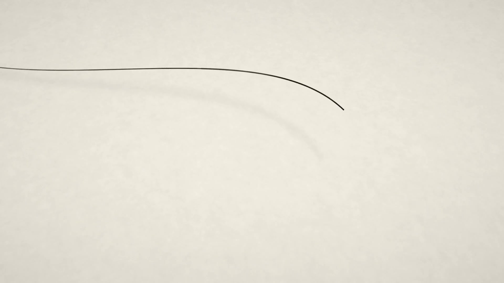

Healthcare creative studio · Lagos
ScrollHealthcare creative studio · Lagos
Healthcare,
up to speed.
FJMK works exclusively with hospitals, clinics and pharmacies to sharpen how they look, communicate and work.
Start a projectThe direction
Make it clear.
Make it useful.
Give people a reason to choose you.
01
Websites
Make the quality of your care visible before the first phone call.
02
Motion & content
Give people something worth their attention.
03
AI implementation
For healthcare workflows. Less friction, more time for the work that matters.
Start here